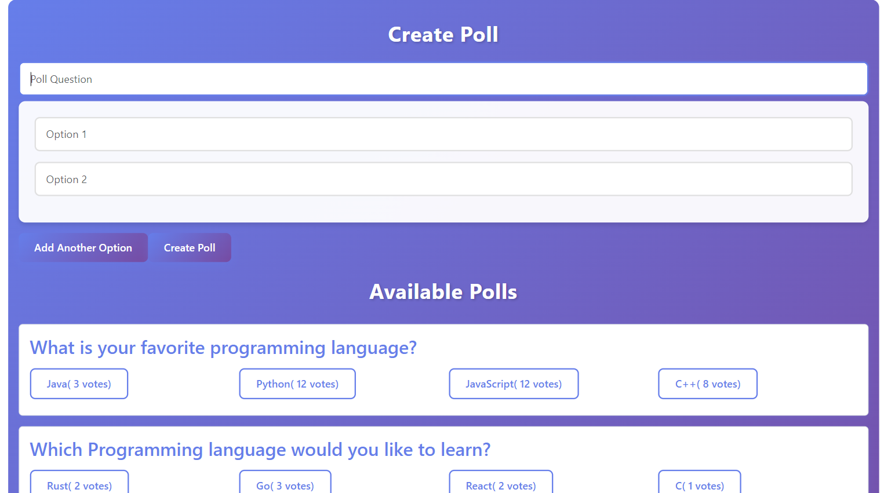

My journey of building an Online Voting System and the projects that shaped my software development skills.
Every developer remembers their first software project. For me, that project was an Online Voting System built using Angular, Spring Boot, and MySQL. It was more than just a college project—it was my first experience building a complete full-stack application and understanding how different technologies work together.
Coming from a Mathematics background, I was excited to apply logical thinking and problem-solving skills to software development. This project became the foundation of my journey as a developer.
I wanted to create a project that solved a real-world problem while allowing me to learn both frontend and backend development.
Built the responsive user interface and integrated backend APIs.
Developed REST APIs, business logic, and backend architecture.
Managed users, polls, votes, and voting results efficiently.
Building my first software project was not easy. Connecting Angular with Spring Boot APIs, handling database relationships, and debugging errors required patience and persistence.
Through these challenges, I learned how to think like a software developer and solve problems independently.
Built using HTML, CSS, and JavaScript to understand DOM manipulation, event handling, and UI development.
Created a real-time clock using JavaScript Date APIs and timers.
Implemented start, stop, and reset functionality while learning timing functions.
Developed an interactive quiz platform with scoring logic and dynamic questions.
Built using HTML, CSS, and JavaScript to create engaging animations triggered by scrolling events.
Today, I continue exploring Python, Artificial Intelligence, Machine Learning, Data Science, and Software Development. My goal is to combine my Mathematics background with modern technologies to build intelligent and impactful solutions.
The Online Voting System transformed me from a student learning programming into a developer capable of building complete software applications.
Every project—whether a calculator, digital clock, stopwatch, quiz application, or animated counter—contributed to my growth. Each challenge strengthened my skills, improved my confidence, and motivated me to continue learning.
Looking back, every bug fixed, every feature implemented, and every line of code written was worth it. These projects laid the foundation for the developer I am today.